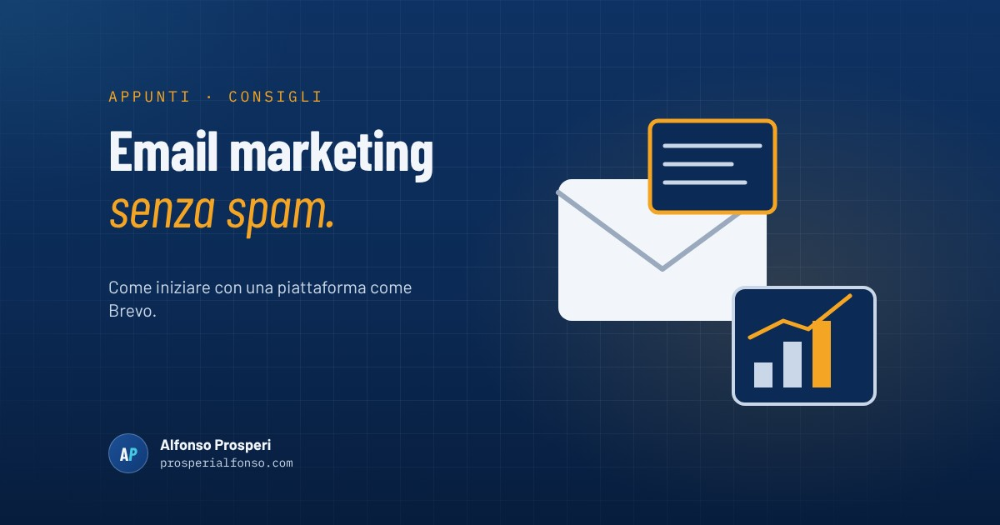

Per una piccola attività l'email resta uno degli strumenti più efficaci: arriva direttamente a chi ha scelto di ricevere notizie, non dipende dagli algoritmi dei social e costa poco. Per farlo bene non serve un programma da installare: esistono piattaforme online pensate apposta. Una delle più usate in Italia è Brevo, che fino al 2023 si chiamava Sendinblue.
Cosa fa una piattaforma di email marketing
- Gestisce la lista dei contatti, con iscrizioni e cancellazioni automatiche.
- Modelli già pronti da personalizzare con logo, colori e foto, senza saper programmare.
- Invii programmati e messaggi automatici, come il benvenuto a chi si iscrive.
- Statistiche: quante persone hanno aperto l'email e cliccato i link.
Brevo ha un piano gratuito, con un limite di email inviabili ogni giorno, al momento 300, che basta per iniziare con una lista piccola. Per numeri più grandi ci sono piani a pagamento. Alternative simili sono MailerLite e Mailchimp.
Prima regola: il consenso
Si possono inviare email promozionali solo a chi ha dato il consenso. Niente liste comprate, niente indirizzi presi da biglietti da visita o dai gruppi WhatsApp. In pratica:
- usa un modulo di iscrizione sul sito o in negozio che spieghi cosa riceverà la persona;
- scrivi chi tratta i dati con un'informativa privacy chiara;
- metti in ogni email il link per cancellarsi (le piattaforme lo aggiungono da sole).
Consigli per email che vengono lette
- Un oggetto breve e concreto: "Le novità di dicembre" funziona meglio di "Newsletter n. 14".
- Un solo messaggio principale per email, con un pulsante chiaro.
- Non esagerare con la frequenza: meglio una email utile al mese che una inutile a settimana.
- Controlla come appare sul telefono: la maggior parte delle persone legge da lì.
- Guarda le statistiche e chiediti cosa ha funzionato.
Per chi ha un'attività, l'email funziona bene insieme agli altri canali, come WhatsApp Business e un sito internet curato.